Zennの「Test」のフィード
フィード

確かめない技術 第3回：テストを再実行しない技術
Zennの「Test」のフィード
この記事は、連載「確かめない技術」の第 3 回です。うまくいかない症状と、その対処を一つずつ並べています。各回はファイルやスクリプトを一つ置けば完結します。その仕組みがなぜ要るのかは、置いたあとに解説を読めば分かります。連載の全体像と各回の一覧は序論にあります。今回は、テストの再実行の話です。再実行というのは、コードを 1 文字も変えていないのに、同じテストをもう一度走らせることです。AIは「最終確認をして引き継ぎます」と書いて、直前に通ったばかりのテストを走らせ直しました。AIにとって、確認と再実行は区別されないからです。私は、結果が変わらないと分かっている実行を、最後まで待って...
4時間前
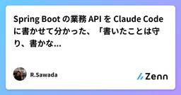
Spring Boot の業務 API を Claude Code に書かせて分かった、「書いたことは守り、書かなかったことは落とす」
Zennの「Test」のフィード
Java・Spring Boot で業務システムを作ってきました。業務システムのコードを AI のコーディングツール（Claude Code）にどこまで任せられるかを、架空の「備品貸出管理 API」で試しました。指示の出し方を変えて4回動かし、出てきたコードを人が書いたテストで確かめています。結論を先に書きます。文章でざっくり頼むと、動くものは出てくる。ただし、頼んでいない機能や、仕様にない判断（タイムゾーン・同時実行の扱い）を AI が自分で決めて入れるルールファイル（CLAUDE.md）と受け入れ条件で縛ると、範囲どおりに作り、テストも厚くなる。ただし、書かなかった非機能...
5時間前

LLMが形式検証を現実的に？Anthropicが示すソフトウェア品質の未来
Zennの「Test」のフィード
Hacker News等で大きな話題を呼んでいる、Anthropicによる最新の研究記事**「LLMs are making formal software verification feasible at a much larger scale」**をピックアップして解説します。AIによるコード自動生成が急速に普及する中で、エンジニアにとって最も重要なテーマの1つとなっているのが「生成されたコードの安全性をどう担保するか」です。この記事では、LLMと「形式検証（Formal Verification）」の組み合わせがどのようにソフトウェア開発の常識を変えようとしているのかを紹介します...
12時間前

誤って止めるガードは、無いより悪い。Claude Codeのhooksを止めすぎない作り方
Zennの「Test」のフィード
!この記事でわかること正しい作業まで止めてしまうガードが、なぜ「無いより悪い」のか実際に起きた誤ブロック5件と、それぞれの直し方止めるべき時に止め、通すべき時に通すことを両方確かめるテストの作り方 はじめに私は、Claude Codeのhooks（ツールを使う直前に自動で走るスクリプト）とgitのpre-commitで、公開リポジトリへのpushなどを機械で止めている。仕組みは前の記事に書いた。この記事ではその逆側の話として、正しい作業を止めてしまう「誤ブロック」をどう避けているかを書く。 ガードが無いより悪い誤ブロックひとことで言うと、誤ブロックは作業を止める...
19時間前

泥臭いリファクタリング
Zennの「Test」のフィード
仕様書がない。テストがない。作った人も、もういない。でも、そんな既存システムを「どうにかしなきゃいけない」状況になったとき。いったいどこから手を付ければよいのでしょうか?世の中には、リファクタリングについての良書がたくさんあります。しかし、現実の現場では、そもそも「リファクタリングを始められる状態にすらなっていない」システムも少なくありません。本書では、そんな「馬鹿でっかいマイナス」を、まずは「どうにかできる程度のマイナス」にまで持っていくための考え方や手順を、実務寄りに書いていきます。現状の把握、リファクタリングを行うかどうかの判断、開発環境の整備、テストの導入、そして既存コードを 少しずつ 改善していく方法。理想的な設計や美しいコードを目指す、その手前にある泥臭い作業を中心に扱います。主な対象読者は、既存システムの保守や改修を任されたエンジニア、あるいはその判断を求められる技術者です。「全部作り直せれば楽なんだけどねぇ……」という状況で、それでも何とかしなければならない方に、少しでも参考になれば幸いです。
21時間前
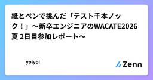
紙とペンで挑んだ「テスト千本ノック！」〜新卒エンジニアのWACATE2026夏 2日目参加レポート〜
Zennの「Test」のフィード
はじめにこんにちは！株式会社ログラス26卒エンジニアの加藤（@yoiyoi_rat）です。WACATE2026 夏 〜テスト千本ノック！〜 に参加してきました！WACATE（Workshop for Accelerating CApable Testing Engineers）は、ワークショップを通じてソフトウェアテストや品質保証を学ぶ、1泊2日の合宿型イベントです。新卒として、品質やテストが大切だということは教わっていたものの、テストをどう考え、どんな手法で設計するのかといった基本的な部分はほとんど知らない状態でした。そんな中、社内でWACATEの案内が共有されたのをきっかけ...
1日前
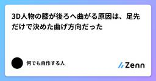
3D人物の膝が後ろへ曲がる原因は、足先だけで決めた曲げ方向だった
Zennの「Test」のフィード
24式太極拳の動きを3Dで観察する「Taichi Studio」というアプリを、自分用に作っています。現在は開発中で、まだ本番公開していません。人物が向きを変える場面で、膝が骨盤に対して後ろへ曲がる姿勢がありました。足首や骨の長さは合っていても、膝の向きが不自然になります。原因は、膝をどちらへ曲げるかを足先の向きだけで決めていたことでした。足先と骨盤が大きく違う方向を向いたときに、骨盤の前方を使う補正を加えました。 足首の位置と骨の長さだけでは、膝の位置は決まらないこのアプリでは、股関節と足首の位置、大腿と下腿の長さから膝の位置を求めています。ただし、この条件だけでは曲げる方...
1日前
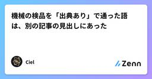
機械の検品を「出典あり」で通った語は、別の記事の見出しにあった
Zennの「Test」のフィード
店の紹介サイトを AI に作らせています。前に note で、書いた文の語を情報源と突き合わせる照合の話を書きました。https://note.com/good_hawk7521/n/n4b53a565b17eこの照合は、機械の検品の中で走る検査のひとつです。情報源に無い語は「出典なし」で落ちる。硬い検査です。今回はその裏側です。「出典あり」で通ったのに、裏は取れていなかった話。 語はあった。事実は書いていなかったある店の紹介文に「ミルクは常温と煮出しから選べる」と書いてありました。照合にかけると、『常温』は出典あり。機械は通します。情報源を開いて、『常温』がどこに...
1日前
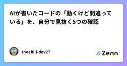
AIが書いたコードの「動くけど間違っている」を、自分で見抜く5つの確認
Zennの「Test」のフィード
AIにコードを書かせていて、こんな不安はないだろうか。動いた。エラーも出ない。でも、合っているのか分からない「ここ、間違ってない?」と聞くと「ご指摘ありがとうございます!」と直される。じゃあ聞かなかったらどうなっていたのかレビューしてくれる人がいない。自分はコードが読めないこれは「コードが読めないから起きる問題」ではない。「間違いの出かた」を知らないから起きる問題だ。そして間違いの出かたには型があり、型を知れば、コードが書けなくても確認はできる。この記事では、非エンジニアが自分の手で実行できる確認を5つ挙げる。コード例はすべて標準ライブラリだけで動き、掲載前に実際に実行し...
1日前
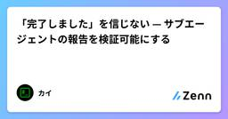
「完了しました」を信じない — サブエージェントの報告を検証可能にする
Zennの「Test」のフィード
委譲した作業について、親が観測できるのは返ってきた報告のテキストだけです。そこに書かれた「完了しました」が実体と食い違っていても、報告を読むかぎり気づけません。実際に、進捗記録は「完了」なのに生成物がどこにも存在しない、という乖離が起きました。この記事では、完了報告を信じるのではなく検証可能にするための設計をまとめます。サブエージェントへ作業を委譲する運用を前提とした内容です。確認した証跡のパスを報告フォーマットに組み込む、バリデータの 0 件を完了と読み替えない、縮小実装は列挙させて採否は人間が決める、DoD をチェックリストとして固定する——いずれも、実運用で乖離が起きたあとに足し...
1日前

あなたはQA/品質保証に向いている、という話
Zennの「Test」のフィード
はじめに株式会社TOKIUMでQAエンジニアをしている西田です。今回は、これまで公開してきたような技術共有とは趣向を変えて、軽めの雑談を持ってきました。個人の勝手な想像も含めた見解なので、その点ご容赦ください。生成AIが開発に入ってきて、品質保証（QA）の立ち位置もだいぶ変わってきました。コーディングに他職種の人が入ってきやすくなったのと同じで、QAも、AIの手を借りれば未経験の人でもある程度のテストはこなせるようになっています。しかも上流工程が爆速になったので、下流にいるQAがボトルネックになってリリースを止めてしまう心配は、前よりずっと大きくなりました。誰が担当し...
2日前
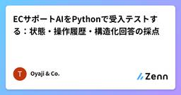
ECサポートAIをPythonで受入テストする：状態・操作履歴・構造化回答の採点
Zennの「Test」のフィード
注文照会、キャンセル、返金を扱う AI を評価する場合、返答の文章に加えて、実行した操作も確認する必要があります。たとえば、返金額の最終値が 1,000 円でも、途中で別の操作 ID を使って返金を再要求していた可能性があります。店舗側の API が二重返金を防いでいれば、最終値だけでは、この試行を見落とします。この記事では、架空の日本語 EC 業務を使い、次の三つを機械的に採点する小さなテストキットを紹介します。模擬 DB の最終状態と変更箇所成功・拒否・失敗を含むツールの試行履歴facts として返す構造化回答、およびケースで指定した文字列条件無料の 5 ケース版で...
2日前
「戻せる削除」と「戻せない削除」をどう扱うか。sasurahime の Cleaner trait と --yes の設計
Zennの「Test」のフィード
ファイルを消す CLI は、機能の追加より「消さない仕組み」の設計が難しいです。sasurahime は macOS の開発キャッシュを消すツールで、対象は 51、テストは 752 件あります。この記事では、削除の契約、--yes の範囲を絞った判断、テストの環境依存を消した話を書きます。設計の中心は契約です。 中心にあるのは「消さない契約」すべての cleaner は Cleaner trait を実装します。中核はこの 3 つです。pub trait Cleaner: Send + Sync { fn name(&self) -> &'stati...
2日前
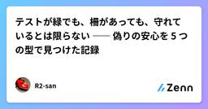
テストが緑でも、柵があっても、守れているとは限らない ―― 偽りの安心を 5 つの型で見つけた記録
Zennの「Test」のフィード
本記事の内容は私（R2-san）の体験（実装コード）・判断・指示に基づきますが、文章作成は生成 AI が行い、私の監修・確認を経て公開しています。(投稿時の情報です。開発中のもので、数字や仕様は 2026 年 10 月時点のものです。) この記事の対象自分の現場に、もうセキュリティ対策を入れている人に向けた記事です。対策を入れたかどうかではなく、入れた対策が本当に効いているかを確かめたい人を想定しています。セキュリティの一番の敵は、対策が無いことではなく、効いていない対策が生む「守れている」という安心だと考えています。いわゆる Security Theater(安心の感覚...
2日前
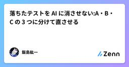
落ちたテストを AI に消させない:A・B・C の 3 つに分けて直させる
Zennの「Test」のフィード
はじめに私は、小さな事業者むけの業務ソフトを一人で作っています。開発は AI エージェント(Claude Code)にまかせています。AI にコードを直させると、前からあるテストが落ちることがあります。そのとき AI は、テストのほうを直して通そうとすることがあります。期待する値を書き換える、条件をゆるめる、skip を付ける、テストを消す。どれも「通った」という結果は出ますが、テストが守っていた約束は消えてしまいます。この記事では、私が AI に守らせている「落ちたテストの直し方」を書きます。2 本目の記事の「AI の『通りました』をどう信じるか」の続きです。 起きたこと...
3日前
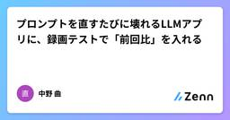
プロンプトを直すたびに壊れるLLMアプリに、録画テストで「前回比」を入れる
Zennの「Test」のフィード
LLMを組み込んだアプリで、プロンプトを1行直したら別の入力で出力が壊れた、という経験はないでしょうか。普通のコードならテストで防ぐ「デグレ」ですが、LLMは出力が揺れるので、テストを書かずに手で数件試して終わりにしがちです。この記事では、APIキーなし・課金ゼロでCIに載せられる最小構成を紹介します。考え方はシンプルで、次の3つだけです。機械で白黒つく性質だけをチェックする（決定的チェック）LLMの応答を録画して、テストは録画を再生して行う（カセット）「全部合格」ではなく「前回より悪くなっていないか」で判定する（ベースライン比較） 1. 決定的チェック「要約として自然...
3日前
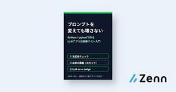
プロンプトを変えても壊さない：Python×pytestで作るLLMアプリの回帰テスト入門
Zennの「Test」のフィード
LLMを組み込んだアプリで「プロンプトを1行直したら別のところが壊れた」を防ぐための本です。決定的チェック・応答の録画（カセット）・LLM-as-a-Judgeの3層で、デグレを自動で検知する仕組みをPythonとpytestだけで作ります。サンプルコードはAPIキーなし・課金ゼロで動き、GitHub ActionsでもAPIを呼ばずに毎回テストできます。第1章は無料で読めます。
3日前
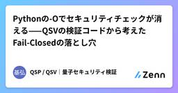
Pythonの-Oでセキュリティチェックが消える——QSVの検証コードから考えたFail-Closedの落とし穴
Zennの「Test」のフィード
セキュリティの検証プログラムを書いていて、怖いことに気づいた。通常の実行では、不正なデータをきちんと拒否する。ところが、Pythonの起動オプションを一つ変えるだけで、その検査処理自体が実行されなくなる場合がある。問題になるのは、次のようなコードだ。assert actual_hash == expected_hash見た目は単純なハッシュ値の照合である。しかし、Pythonを-Oオプション付きで実行すると、このassert文は除去される。つまり、実行条件によっては、不正なデータを拒否するはずのプログラムが、その検査を行わずに通過させてしまう。これはPythonのバグでは...
3日前
FNV-1a を % 8 で振り分けたら、8人中3人に1件も来なかった — 2のべき乗の剰余は下位ビットしか見ない
Zennの「Test」のフィード
個人の自動化プロジェクトで、リダイレクト用の小さな Worker を動かしている。今回、そこに「1つの入口URLから来た人を、8つの飛び先に均等に振り分ける」機能を足した。入口のURLは紙に印刷した QR コードに入る。印刷したあとは URL を変えられないので、振り分けはサーバー側でやることにした。条件は2つ。8つの飛び先にほぼ均等に散ること同じ端末は何度開いても同じ飛び先に行くこと(再訪のたびに行き先が変わると、記録上の帰属が後から上書きされてしまう)2つ目があるので乱数は使えない。そこで「IP + User-Agent をハッシュして、8で割った余り」にした。よくある...
3日前